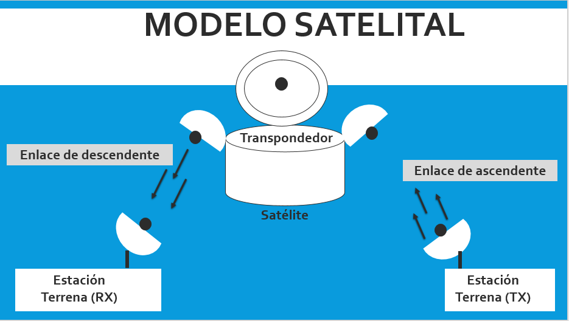

Son una herramienta muy útil, estos consideran
párametros como el perfil del terreno, que puede variar
en diferentes caracteristicas ej: montañoso o inclinado.
Ademas como la presencia de edificios, arboles, entre
otros.
Caracteristicas
Se puede hacer una clasificación atendiendo al tamaño del área
de cobertura:
Son sistemas de radiocuminaciones troncalizados que utilizan tecnicas de transmisiones multiples,
control y señalizacion digital para ofrecer la maxima eficiecia en el uso de canales de voz, datos
e imagenes.
Representan la solucion idela para sistemas de comunicaciones en el area geografica restringidas o
extensas historas como edificios, regiones, municipios y provincias.
Modelo basico de un sistema satelital en el siguiente diagrama:

Las comunicaciones de los enlaces entre estaciones terrenas y los satelites estan constituidos por
radiacion electromagnetica dirigida en forma de haces. De esta manera entonces se tienen en cuenta en
un modelo de enlace satelital:
MODELOS DE ENLACE SATELITAL
Es el canal por donde se envian y se reciben las señales trasmitidas de la estacion terrestre al
satelite y de este a la estacion terrestre.
Estos se basan en numerosas medidas y observaciones de campo
sobre el ambiente de propagacion en condiciones reales, a partir
de las cuales se obtienen formulas por medio de ajustes.
Estas se basan en teorias fisicas y mecanismos de propagación de
las ondas electromagneticas. Incorporan algunas caracteristicas
del entorno (por lo que requieren ciertos datos de morfologia
del terreno) y se complementan con medidas para el ajuste de sus
parámetros.
Estos se basan en numerosas medidas y observaciones de campo
sobre el ambiente de propagacion en condiciones reales, a partir
de las cuales se obtienen formulas por medio de ajustes.
Estos se basan en teorias fisicas y mecanismos de propagacion de las ondas electromagneticas. Incorporan
algunas caracteristicas del entorno (por lo que requieren datos de morfologia del terreno) y se
complementan con medidas para el ajuste de sus parametros.
Estos se basan en la representacion matematica de las leyes de propagacion de ondas electromagneticas,
normalmente toman como referencia las leyes de Maxwell con el fin de predecir intensidad de la señal
recibida.
Es la representacion del comportamiento de las variables aleatorias en los que existe una secuencia
cambiante de eventos que se analizan probabilisticamente durante un intervalo de tiempo.
La propagacion en interiores no esta influenciada por el perfil del terreno como la propagacion en
ambientes abiertos, pero puede ser afectada por laestructura del edificio, especialmente si hay varios
tipos de materiales de construccion en el edificio. La señal transmitida alcanza al receptor por mas de
un atrayectoria o ruta, a traves de reflexion, refreccion y difraccion de las ondas de radio a causa de
objetos como: paredes, ventanas y puertas dentro del edificio.
Los modelos en exteriores de acuerdo al tamaño de la zona de cobertura se pueden fividir en modelos de
propagacion e zonas grandes y zonas pequeñas.
Existen mas modelos de propagacion para sistemas inalambricos Outdoor debido a que la comunicacion
inalambrica en exteriores se vienen utilizando desde hace mucho mas tiempo: radio, television entre
otros.
Una caracteristica es que estos modelos no tienen en cuenta las cualidades particulares de la
propagacion en Indoor (interiores).
El siguiente video brinda el concepto y formulas del modelo de dos rayos con Linea de vista (LOS):
El siguiente video brinda el concepto y formulas del modelo de Friis con Linea de vista (LOS):
El siguiente video brinda el concepto y formulas del modelo de Walfisch Ikegami con Linea de vista (LOS)
y son linea de Vista (NLOS):
Cuando hablamos de PMR (Radios Móviles Privadas), nos referimos
a redes de comunicaciones privadas que usan los móviles que
llevan esta tecnología y no se conectan con redes públicas. Son
redes para grupos cerrados de usuarios. Su uso primordial es
aquellas organizaciones que necesitan tener un control sobre
terminales desde un punto central.
Historia
Aplicaciones o usos:
Cuando hablamos de WIFI, nos referimos a una de las tecnologias
de comunicación inalámbricas mediante ondas. La cual es muy
utilizada hoy en dia. WIFI pertenece al tipo de red WLAN (Redes
inalambrias de area local).
Historia
Ventajas
Cuando hablamos de WiMax (WorldWide InterOperability for
Microwave Acces), nos referimos a una tecnologia de radio de
ultima generación promovida por la IEEE y pincipalmentew
diseñada para proveer vía radio alta capacidad. WiMax pertence
al tipo de red WMAN(redes inalambricas de area metropolitana).
Historia:
Ventajas:
Cuando hablamos de LMDS (Los sistemas de distribución local
multipunto). Nos referimos a una la representación de una
tecnología de acceso inalámbrico de banda ancha. Se aplica para
el acceso a internet a alta velocidad, telefonía, transmisión de
datos entre otros. Requiere de una línea de vista entre el
transmisor y el receptor
Aplicaciones o Usos:
Es un estándar definido por el Instituto Europeo de Estándares
de Telecomunicaciones (ETSI). Define un sistema móvil digital de
radio y nace con el objeto de unificar diversas alternativas de
interfaces de radio digitales para la comunicación entre los
profesionales de los servicios de emergencias y servicio
público. TETRA, es un sistema móvil radioeléctrico de calidad
elevada que ha sido desarrollado principalmente para usuarios
profesionales, tales como los servicios de emergencia y los
transportes públicos. Cumple especificaciones radioeléctricas de
servicios móviles que proporcionan una capacidad completa, que
abarca las comunicaciones con concentración de enlaces,
comunicaciones sin concentración de enlaces y comunicaciones
directas de móvil a móvil.
Se emplean en muchas industrias, entre ellas las siguientes:
DECT (Digital Enbaced Cordless Telecomunications), es un sistema de radio que se utiliza con especial
frecuencia en los telefonos fijos. El nombre de este sistema se refiere a un estandar para la
comunicacion inalambrica de señales de voz y datos. Con la introduccion de estos sistemas se adquiere
gran ventaja.
El siguiente video brinda informacion del funcionamiento del sistema DECT:
Aplicaciones o usos:
La radio mensajeria es un servicio de telecomunicaciones, que permite recibir mensajes orales o escritos
en pequeños terminales portatiles de recepcion de radio (generalmente llamados mensafonos), que son
suministrados a los abonados.
Los emisores deben comunicar telefonicamente el mensaje indicando el codigo de identificacion de abonado
al que va destinado, a un centro de recogida de mensajes, donde se realiza la difusion via radio de los
mismos.
La evolucion de la radio mensajeria en el siguiente video:
Son sistemas de radiotelefonia que ofrecen servicio a un grupo cerrado de usuarios, sin la nesecidad o
con la posibilidad de su conexion a la red publica de telefonia.
Es un sitema de telefonia movil de primera generación (1G), desarrollado por los laboratorios Bell e
implementado por primera vez en 1982 en Estados Unidos.
¿ Que es la primera generacion (1G)?
Para saber como funciona este sistema mira el video:
Es un protocolo de acceso multiple para los sistemasde comunicacion celular movil, en otras palabras, es
una tecnica que permite que varios usuarios puedan acceder a un mismo medio de comunicaciones.
CARACTERISTICAS:
Ventajas:
Representa el acceso multiple por division de tiempo, es una tegnologia que permite multiples
conversaciones compartiendo el mismo canal de radio. Es un tipo de modulacion digital. Los proveedores
de telefonia movil pueden usarla para transmitir datos.
CARACTERISTICAS:
Ventajas:
Tegnologia inalambrica que facilita la transmision de datos a traves de partes de una red telefonica que
no sean utilizadas. Es una completa red movil de datos (arquitectura de red) que incluye la definicion
de radio, los mecanismos para compartir canales, los mecanismos para asegurar la movilidad en area local
y amplia, los protocolos y procedimientos de interpretacion entre sistemas entre otros.
El sistema esta estructurado siguiendo los 7 niveles del modelos OSI:
Fue el intento europeo de unificar los distintos sistemas moviles digitales y sustituir a los analogos.
Diseñado con la posibilidad de que varios operadores pudieran compartir el espectro. la red GSM, de
segunda generacion (2G), permite conexiones tanto de datos como de voz.
GSM tiene cuatro versiones principales basadas en la banda:
Es un sistema de comunicaciones movil que se creo en la decada de los 80. Fue bautizada como la
generacion 2.5, trajo
varios cambios y aportes innovadores a las comunicaciones moviles es una extension mejorada del GSM.
GPRS es una tecnica de conmutacion de paquetes que emplea una codificacion reducida del canal, tiene la
capacidad para suministrar datos directamente al terminal de usuario, incluso si este se encuentra
apagado o fuera de cobertura.
CARACTERISTICAS:
Ventajas:
Es un sistema que proporciona accesibilidad a un amplio rango de servicio de voz, mensajes y
localizacion, a usuarios en casa, trabajo, en movimiento y en regiones remotas ya sean estas nacionales
o internacionales.
Estructura:
Ventajas:
4G hace referencia a la cuarta generacion de rede moviles y LTE es sinonimo de Evolucion a Largo Plazo.
Es un estandar para la comunicacion inalambrica de datos a alta velocidad. Expande el tamaño de la red y
la velocidad mediante el uso de una estructura de red rediseñada produciendo mayor velocidad y potencia
en la comunicacion, es la red mas popular.
Historia:
Ventajas:
Cuando hablamos de 5G nos referimos a la quinta generacion de tecnologia celular inalambrica, que ofrece
mayores velocidades de carga y descarga, conexiones mas consistentes y capacidad mejorada que las redes
anteriores. Permite mejrar y multiplicar la capacidad de los canales de informacion de este modo
posibilita que los objetos cotidianos aomo automoviles, implementos del hogar entre otros se puedan
conectar en tiempo real a internet o red, todo esto debido a la aparicion de estas nuevas tegnologias
como: IoT (Internet de las Cosas) y la automatizacion.
Cuando hablamos de IoT nos referios a una revoluvion tecnologica qu posibilita al mundo de las llamadas
"cosas inteligentes", estos objetos se conectan a internet, de este modo las redes 5G junto con estas
tegnologias como lo es IoT, logren grandes ventajas para el mundo tecnologico.
Ventajas:
Ventajas:
Los satelites de orbite geoestacionaria (GEO) siguen una orbita alrededor de la tierra sobre el ecuador
en una direccion y velocidad similares a la de la rotacion de la tierra. Esto permite al satelite
permanecer concentrado en un area de la superficie terrestre de la forma continua.
Los satelites MEO orbitan a una altura mayor que los LEO. Este tipo de satelites, son caracterizados por
que la forma de su orbita es usualmente la de una orbita Circular intermedia (ICO). Un sistema globalde
comunicaciones que este trabajando sobre este tipo de orbita no nesecita muchos satelites para poder
cubrir todo el territorio del planeta en cuanto a señales de comunicacion, a diferencia de la
comunicacion por medio de satelites tipo LEO.
Estos staelites son de tipo no geoestacionarios, de orbita baja y desde sus primeros lanzamientos, los
cuales, a principios de los años 80, son un medio muy importante debido a su gran cobertura mundial y a
que que presenta una opcion muy atractiva en el nivel cientifico.
Segmentacion en la estacion terrena en forma de diagrama:
Consiste en modular una señal de FI en banda base a una señal de frecuencia intermedia modulada en FM,
PSK y QAM, seguida por el convertidor elevador, el cual esta constituido por un mezcladro y un filtro
pasa bandas, que convierte la señal IF a RF. Como ultima etapa la señal pasa por un amplificador de
potencia (HPA) que da la potencia nesesaria para que la señal llegue hasta el satelite.
Modelo basico de un enlace de subida en el diagrama:
El receptor de la estacion terrena contiene un filtro (BFP), el cual limita la potencia de entrada que
recibe el LNA, cuando ya es amplificada la señal en bajo ruido la señal desciende de RF a frecuencias IF
por medio de un convertidor descendiente, luego la señal se demodula y se envia en banda base.
Modelo basico de un enlace de bajada en el diagrama:
Para realizar la comunicacion satelital en ocasiones, no solo se requiere de un unico satelite, en pocas
palabras lo que sucede es que cuando no hay linea de vista entre el satelite y el receptor entonces se
hace nesesario utilizar otro satelite que, si tenga linea de vista con estacion receptora, pudiendose
realizar transmisiones a mayor distancia.
Modelo basico de un enlace cruzado en el diagrama:
Esta constituido por un filtro pasa banda (BFP), este se encarga de limpiar el ruido que la señal
adquiere en la trayectoria de subida, tambien seleccione el canal ya que cada canal satelital requiere
de un transpondedor por separado. Luego le sigue un amplificador de bajo ruido (LNA) y el desplazador de
frecuencia que convierte la frecuecia de banda alta de subida a banda de salida, despues el amplificador
de baja potencia que amplifica la señal RF para el enlace de bajada, las señales se filtran y regresan a
la estacion terrena.
Etapas basicas de un transpondedor en el diagrama:
En el siguiente video encontraras los parametros del Sistema Satelital:
En el siguiente video encontraras las Ecuaciones del Sistema Satelital:
Seleccione el tipo de sistema:
Fórmula para el cálculo de las pérdidas por trayecto según el modelo:
Lp(dB)=42,6+26 log(d)Km+20 log(f)Mhz
Ingrese los datos requeridos:
f(MHz): Frecuencia de operacion del sistema:
(800 - 2000)